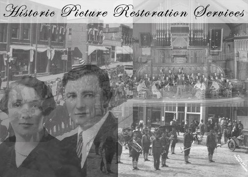

Preserving photos is a great way to preserve history. The MVHPC uses historic photos often in our efforts to restore and study historic properties. Photos, however, do not last forever; they fade, tear, discolor, and get dirty. We find that restoring pictures gives them new life, and they are simply just better pictures. An old picture that was torn or faded may become the new picture that you hang on the wall.
Restored pictures also make great gifts. Not only can we restore you picture, but we can also shrink/enlarge it to almost any size. In addition, we can print multiples so you can give them away to the people who also want a copy.
While we specialize in historic picture restoration we are also available to improve newer pictures that are just not right. Sometimes there is a picture that is discarded because someone is not looking but one or two others in the picture look great. We can create a new picture from the original with just the things you want in it. Some other fun things we can do are: changing the background, adding color, changing to black and white, and much more!
If you have a picture that you want us to look at and see what could be done to it send it to:
MVHPC Picture Restoration
9315 Deer Ridge Dr. NE
Cedar Rapids, IA 52411
If you have any questions please feel free to call me at (319)-241-1981, or email me at: mitchbloomquist@hotmail.com